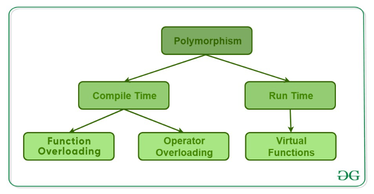

OOP concepts⚓︎
This material is for listing different OOP concepts:
- OOP
- Class and Object
- Inheritance
- Polymorphism
- Encapsulation
- Interface
- Abstract class
- Abstract methods & Virtual function (method)
- Overloading
- Overriding
- Compile & Run time
- Static methods and variables
- Constructor and Destructor
- Access modifier
OOP⚓︎
Benefits of OOP
Object-oriented programming has several advantages over procedural programming:
- OOP is faster and easier to execute
- OOP provides a clear structure for the programs
- OOP helps to keep the code DRY "Don't Repeat Yourself". It create full reusable applications with less code and shorter development time
- OOP makes the code easier to maintain, modify and debug.
Class and Object⚓︎
Class and Object
-
A
classis a template or blueprint for creating objects.- It defines the properties and behaviors that an object of that class should have.
- A class encapsulates data and methods that operate on that data, providing a way to organize and structure complex programs.
-
An
objectis an instance of a class.- When a program creates an object of a class, it allocates memory for that object and initializes its member variables and methods according to the class definition.
- Objects can interact with each other and with the program through their methods and public member variables.
Inheritance⚓︎
Inheritance
A mechanism in OOP that allows subclass(derived class) to inherit properties and methods from a parent class(base class). And it can add new properties and methods or override the old class's methods
-
Usage:
Subclassescan inherit public and protected members from theparent class, but NOT private members. See C++ Inheriance for more details. -
Advantages: It is an important way of code reuse. (for avoiding duplicates, organizing code structure, and improving code readability and maintainability).
Polymorphism⚓︎
Polymorphism
The ability of methods with the same name to behave differently (depending on the type of object they are called on or the arguments that are passed to them).
-
Usage: method overloading, method overriding, interface implementation, and more.
-
Advantages: Improve code flexibility and extensibility, reduce code repetition, and better adhere to the open-closed principle.

Encapsulation⚓︎
Encapsulation
A mechanism for combining data and methods together as a single entity (class) and controls access to these data and methods through a public interface.
-
Usage: By encapsulating, the internal details of an object can be hidden, and only the interface exposed to the outside world can be used.
-
Advantages: Improve code security and reliability, reduce unnecessary coupling, and make code more maintainable and easier to extend.
Interface⚓︎
Interface
An abstract type defines a standard specification for a set of methods WITHOUT providing an implementation.
-
Usage: Interfaces allow different classes to implement the same methods with specific implementation.
-
Advantages: Improve code flexibility and extensibility (code decoupling).
/*an interface declaration*/
class InterfaceClass{
public:
virtual void method_first() = 0 ; // declaring a pure virtual method by assigning 0
virtual void method_second() = 0;
};
Satisfy:
- has all methods declared as pure virtual methods.
- has no variable declaration.
Satisfy:
- must have at least one pure virtual method.
- can have implemented methods.
- can have variables declaration.
Abstract class⚓︎
Abstract class
A class that CANNOT be instantiated and defines some methods without implementation.
-
Usage: Its main purpose is to allow derived classes to implement these methods, thus achieving polymorphism.
- Subclasses must implement all the abstract methods in the abstract class, otherwise, the subclass must also be an abstract class.
- The abstract class <==> contains at least one abstract method (pure virtual function).
-
Advantages: Provide standard. (Provide a template and standard for subclasses to ensure that subclasses implement the methods and properties defined in the abstract class.)
#include <string>
#include <iostream>
/*Declaring an abstract class*/
class AbstractClass{
public:
AbstractClass(std::string msg): message(msg){}
virtual void method_first() = 0; // a pure virtual method
virtual void method_second(){ // implemented virtual method
std::cout << message << std::endl;
}
private:
std::string message;
};
Abstract methods & Virtual function (method)⚓︎
Virtual function (method)
Abstract methods: are pure virtual methods, which have no actual code in them, and (non-abstract) subclasses HAVE TO override the method. It can only be used in an abstract class.Virtual methods: can have code, which is usually a default implementation of something, and any subclasses CAN override the method using the override modifier and provide a custom implementation to achieve polymorphism.
Overloading⚓︎
Overloading
A concept specifies more than one definition for a function name or an operator in the same scope, which is called function overloading and operator overloading respectively.
-
Usage: when a program calls a method with the same name, the compiler automatically matches and calls the corresponding method based on the differences in parameter types and numbers.
-
Advantages: make the code more concise and flexible, reducing code duplication and redundancy.
#include <iostream>
using namespace std;
class printData {
public:
void print(int i) {
cout << "Printing int: " << i << endl;
}
void print(double f) {
cout << "Printing float: " << f << endl;
}
void print(char* c) {
cout << "Printing character: " << c << endl;
}
};
int main(void) {
printData pd;
// Call print to print integer
pd.print(5);
// Call print to print float
pd.print(500.263);
// Call print to print character
pd.print("Hello C++");
return 0;
}
#include <iostream>
using namespace std;
class Point {
public:
int x, y;
Point operator+ (const Point& other) {
Point result;
result.x = x + other.x;
result.y = y + other.y;
return result;
}
};
int main() {
Point p1, p2, p3;
p1.x = 5;
p1.y = 10;
p2.x = 3;
p2.y = 2;
// Add two Point objects using operator overloading
p3 = p1 + p2;
cout << "Result of point addition: (" << p3.x << ", " << p3.y << ")" << endl;
return 0;
}
Overriding⚓︎
Overrding
A concept refers to redefining a method inherited from a base class in a derived class.
- Usage:
- The overriding method has the same signature (name, parameters, and return type) as the base class method but can have a different implementation.
- When a program calls a same-named method of a subclass object, it first looks for an implementation of the method in the subclass. If an implementation exists, it calls the method in the subclass. If there is no implementation, it continues to look for the method in the parent class.
// C++ program to demonstrate function overriding
// by calling the overridden function
// of a member function from the child class
#include <iostream>
using namespace std;
class Parent {
public:
void GeeksforGeeks_Print()
{
cout << "Base Function" << endl;
}
};
class Child : public Parent {
public:
void GeeksforGeeks_Print()
{
cout << "Derived Function" << endl;
// call of overridden function
Parent::GeeksforGeeks_Print();
}
};
int main()
{
Child Child_Derived;
Child_Derived.GeeksforGeeks_Print();
return 0;
}
Compile & Run time⚓︎
Compile & Run time
Compile time: the period when the program code is being translated into machine code by the compiler, which:- Checks the syntax, types, declarations, and other information in the code.
- Generates executable code.
- Compile-time exceptions are errors that occur during the compilation or translation of a program. These errors are caught by the compiler and reported to the programmer.
- E.g. syntax errors, type errors, and name errors.
Run time: the period when the program is being executed, which- Executes the program (executable code generated by the compiler)
- Produces output based on user input and the logic of the code.
- Runtime exceptions are errors that occur during the execution of a program. They are not caught by the compiler and may cause the program to terminate abnormally.
- E.g. invalid input, null pointer access, and arithmetic overflow.
Static methods and variables⚓︎
Static methods and variables
Methods and variables that are associated with a class rather than with an instance of the class.
-
Usage:
- When defining it, add
statickeyword. - They can be accessed directly by the class name without needing to create an instance of the class.
Static variablescan be accessed in any method of the class WITHOUT creating an object instance.Static methodscannot access instance variables, because they do not depend on the existence of an instance.
- When defining it, add
-
Advantages:
Static variablescan be used to share data among all instances of a class.Static methodscan be used to provide some global utility functions that can be called without creating an object instance.
// The example to use static variable for counting and static method for reading the counter
#include <iostream>
using namespace std;
class Employee {
private:
int num;
static int count; // static variable
public:
Employee(int n) {
num = n;
count++; // increment count every time a new instance is created
}
static int getCount() { // static method to return count
return count;
}
void getID() {
cout << "Instance number: " << num << endl;
}
};
int Employee::count = 0; // initialize static variable
int main() {
Employee ex1(1);
Employee ex2(2);
Employee ex3(3);
ex1.getID();
ex2.getID();
ex3.getID();
cout << "Total number of instances: " << Example::getCount() << endl;
return 0;
}
Constructor and Destructor⚓︎
Constructor and Destructor
- A
constructoris a special function used to create objects. When an object is created, the compiler automatically calls the constructor of the class to initialize the object. - A
destructoris a special function used to destroy objects. When an object is destroyed, the compiler automatically calls the destructor of the class to clean up the object, such as releasing dynamically allocated memory. -
Usage:
- The
constructormust have the same name as the class, no return type (including void), and can have a parameter list. - The
destructormust have the same name as the class, with a tilde (~) in front, and no return type or parameter list.
- The
-
Advantages: Save coding time and system do it automatically for you.
Access modifier⚓︎
Access modifier
Access modifier is the keyword used to set the class member's accessibility for others (classes, fields, methods and properties).
-
Usage: See Access modifier.
-
Advantages:
- Data encapsulation: Gaurantee encapsulation.
- Behavior concealment: Create public APIs but hide it's corresponding inside behaviors in the class.
Reference⚓︎
- Picture resource 1
- OpenAI
- Abstract class vs Interface in C++
- C++ Overloading (Operator and Function)
C++ Code Compiler
Created: March 24, 2023 00:23:57